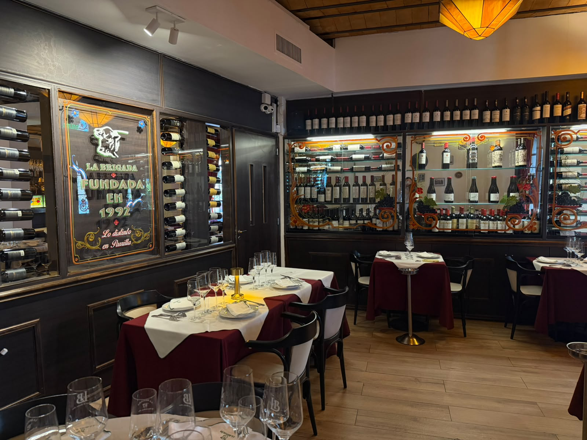
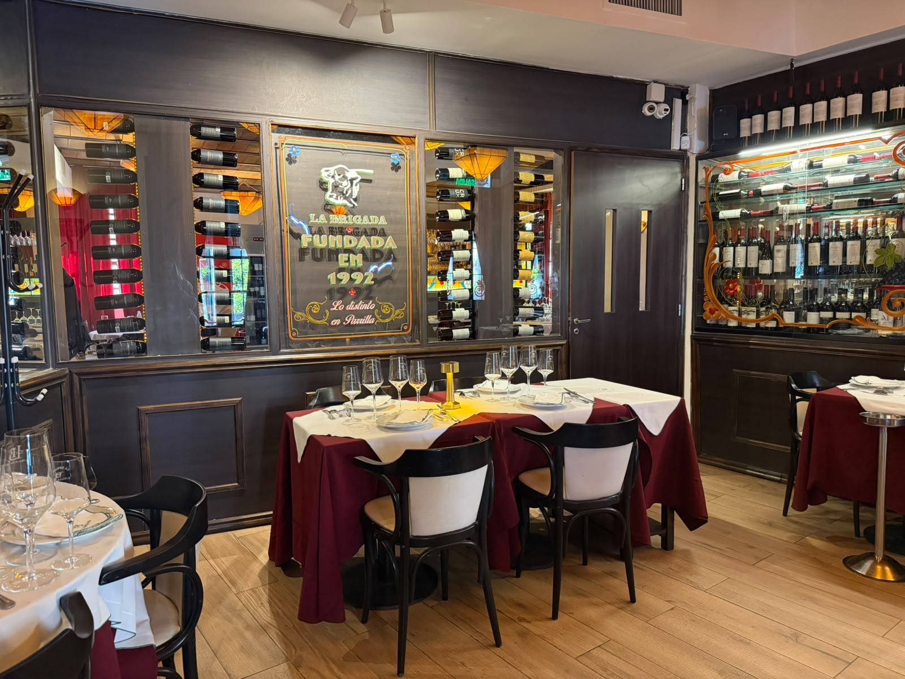
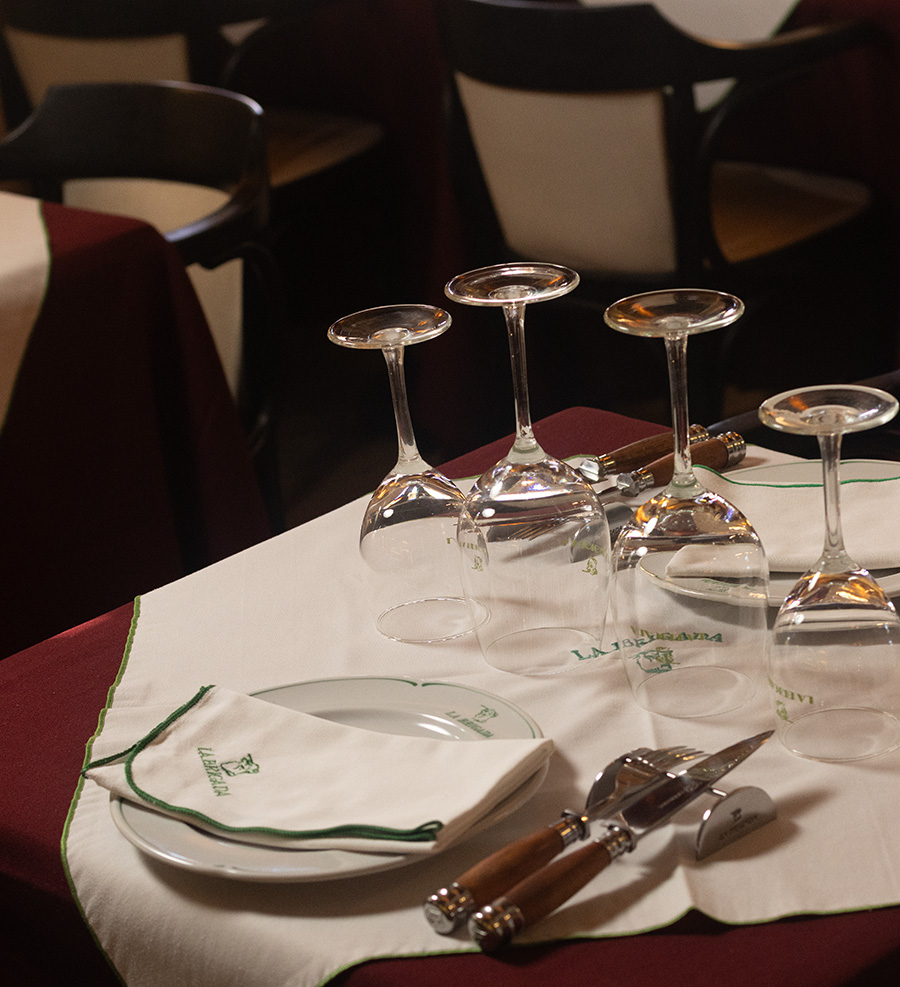
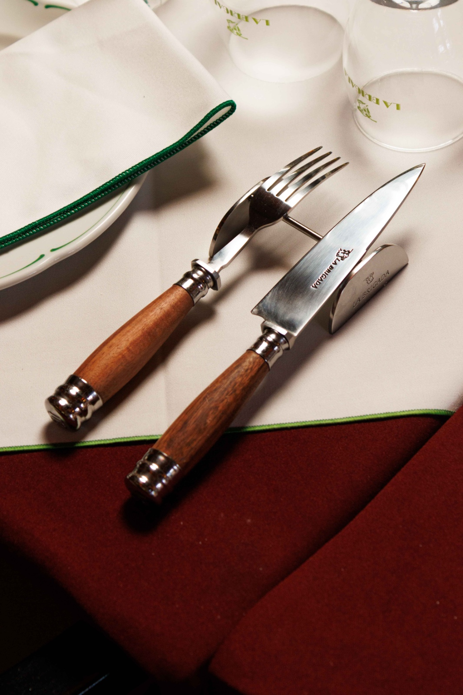
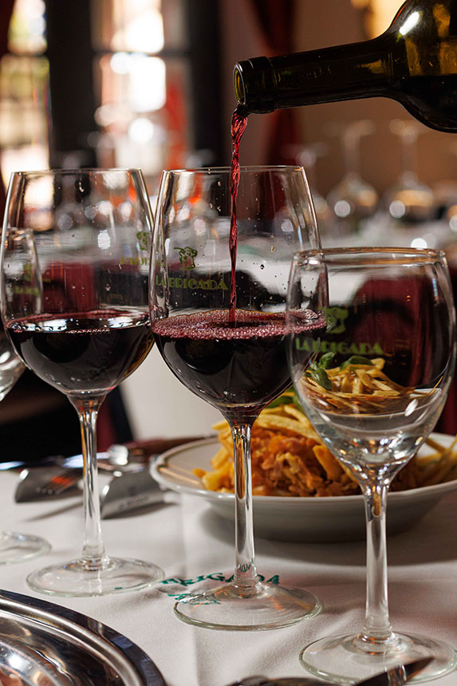
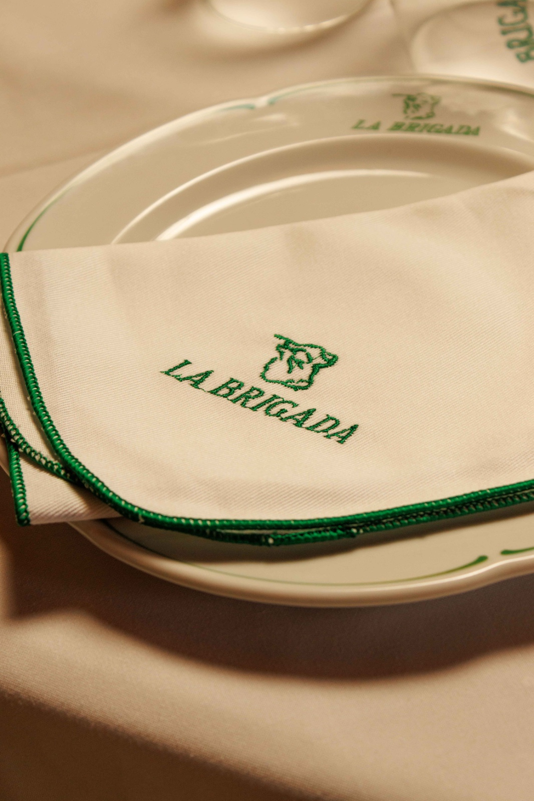
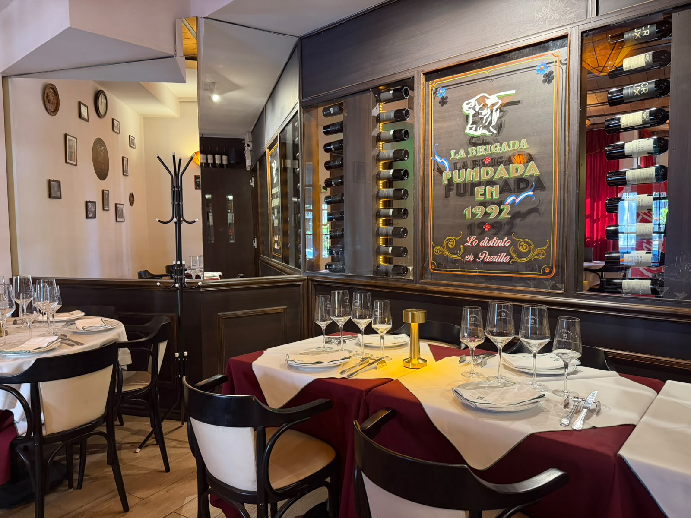

Servicio integral
Todo en un mismo lugar y con un solo interlocutor. La propuesta gastronómica, el salón, el servicio y la cava se coordinan en un único contacto: no hay que gestionar proveedores ni logística en paralelo.
Eventos corporativos en La Brigada San Isidro
El espacio
El Salón VIP es un espacio de uso exclusivo: una sola fecha, una sola mesa, un solo grupo. No hay mesas ajenas ni interrupciones: la noche es de ustedes de principio a fin.
La propuesta gastronómica es la de siempre: cortes seleccionados, cocción precisa y el ritual del corte con cuchara, con una cava de vinos argentinos para acompañar. Sobre esa base, armamos un menú a medida para tu evento.

Por qué La Brigada
Todo en un mismo lugar y con un solo interlocutor. La propuesta gastronómica, el salón, el servicio y la cava se coordinan en un único contacto: no hay que gestionar proveedores ni logística en paralelo.
Sector VIP, camareras por mesa y una carta premium para tu evento. El equipo se anticipa a la dinámica de la noche y el servicio acompaña el ritmo de tu empresa, no al revés.
Desde 1992 en San Telmo, La Brigada es parte de la tradición gastronómica de Buenos Aires. En San Isidro esa trayectoria continúa: los mismos cortes, la misma cava y el mismo ritual del corte con cuchara que sostienen hoy tu mesa.
El formato ideal
El salón trabaja mejor con grupos que comparten una misma mesa. Por su escala y su servicio, es el formato ideal para:
El cierre de año de tu equipo: cena, brindis y una mesa reservada para los tuyos.
La reunión que se decide en la mesa, con el servicio centrado en la conversación.
Una fecha para presentar un producto o una marca ante clientes y equipo, con un espacio que se adapta a la puesta.
Un encuentro para clientes clave, partners o inversores, con camareras por mesa y menú a medida.
Aniversarios, premios y reconocimientos internos, con una propuesta gastronómica propia.
Cumpleaños y celebraciones familiares también se coordinan en el Salón VIP. Para esas consultas, escribinos por WhatsApp.



Calendario
El Salón VIP tiene una única fecha disponible por noche y la temporada de fin de año concentra la demanda. Por eso las reservas se anticipan: cuanto antes definís la fecha, más opciones de menú y de horario tenés disponibles.
Las fechas de noviembre y diciembre se completan primero. Consultanos la disponibilidad de tu evento y te armamos una propuesta.



Hablemos
Contanos qué tenés en mente y te enviamos una propuesta para tu evento.
El Salón VIP se coordina con un interlocutor único. Completá el formulario y te respondemos el mismo día hábil con la disponibilidad de tu fecha y una propuesta a medida.
¿Preferís hablarlo directo? Escribinos por WhatsApp o llamanos al 11 5000-6485.
Cómo reservar
Contanos la fecha, la cantidad de personas y el objetivo de la reunión. Con eso definimos el formato: cena, brindis, menú por pasos o propuesta mixta.
Diseñamos el menú a medida, el plan de bebidas y el servicio, con los tiempos de tu evento en mente. Te la enviamos con el detalle y el valor.
Con la propuesta aprobada, bloqueamos la fecha del salón y cerramos los detalles logísticos de tu evento.
Preguntas frecuentes
Hasta 26 comensales, sentados. Es un formato íntimo, y por eso cada mesa se sirve de forma cerrada y personalizada.
Las reservas se anticipan: en temporada de fin de año, las fechas de noviembre y diciembre se completan con varias semanas de anticipación. El plazo mínimo vigente para tu fecha te lo confirmamos al cotizar.
Sí. La propuesta es abierta: armamos el menú a medida según el tipo de evento, la duración y las preferencias del grupo, con alternativas para restricciones alimentarias.
Sector VIP, camareras por mesa y una carta premium para tu evento. La coordinación es integral: menú, servicio, cava y tiempos de la noche se resuelven en un mismo contacto.
Sí. En cada fecha el salón se reserva para un solo grupo: no hay mesas compartidas ni otros clientes intercalados.
Sobre Av. del Libertador 15900, en San Isidro, Zona Norte de Buenos Aires. Las opciones de estacionamiento te las informamos al confirmar tu reserva.
Sí. Cumpleaños, celebraciones familiares y eventos privados también se coordinan en el Salón VIP.
Las condiciones de facturación para empresas, la seña y las formas de pago vigentes se confirman en la propuesta de cada evento. Contanos tu caso y te lo detallamos.
Te esperamos todos los días
Una parrilla argentina premium sobre Av. del Libertador, con un salón VIP para eventos corporativos de hasta 26 personas.
Av. del Libertador 15900
San Isidro, Buenos Aires
Horarios
Todos los días de 12:00 a 16:00
y de 20:00 a 00:30
Teléfono de Reservas e informes:
11 5000-6485